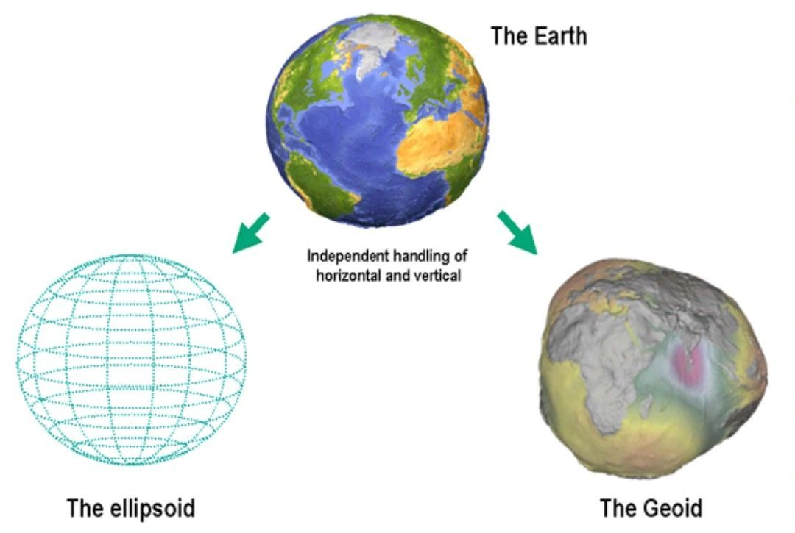

The Earth is not a perfect sphere. Due to its rotation, it bulges slightly at the equator and is flattened at the poles. This oblate spheroid shape is best represented mathematically as an #ellipsoid.
An #ellipsoid has two axes: a longer equatorial axis (the major axis) and a shorter polar axis (the minor axis). The difference in lengths between these axes is due to the centrifugal force caused by Earth's rotation.
Geographers and geodesists (people who study the shape and size of the Earth) use reference ellipsoids to model the Earth for various purposes, including satellite positioning systems like #GPS. There are several standard ellipsoids used worldwide, depending on the region and application.
While the ellipsoid provides a simplified, mathematically-pleasing representation of Earth's shape, the reality is a bit more complex due to variations in Earth's gravity and the distribution of its mass.
The geoid represents the shape that the surface of the Earth's oceans would take under the influence of Earth's gravity and rotation, disregarding other influences such as winds and tides. It's often described as the "#equipotential_gravitational_surface" or the shape that water would adopt if allowed to flow freely across the continents.
The geoid is undulating and irregular because Earth's gravitational pull is not the same everywhere. These variations in gravity can be due to differences in the density and distribution of Earth's mass.
When you hear the term "#mean_sea_level", it's a reference to the geoid. If you've heard the term "#above_sea_level", it's essentially a height measurement relative to the geoid.
In practical terms, the difference between the #geoid and the #ellipsoid is known as the "geoid undulation" or "geoid height". It's the distance between the two at any given point on Earth. When creating maps or conducting precise surveying, understanding this difference is crucial.